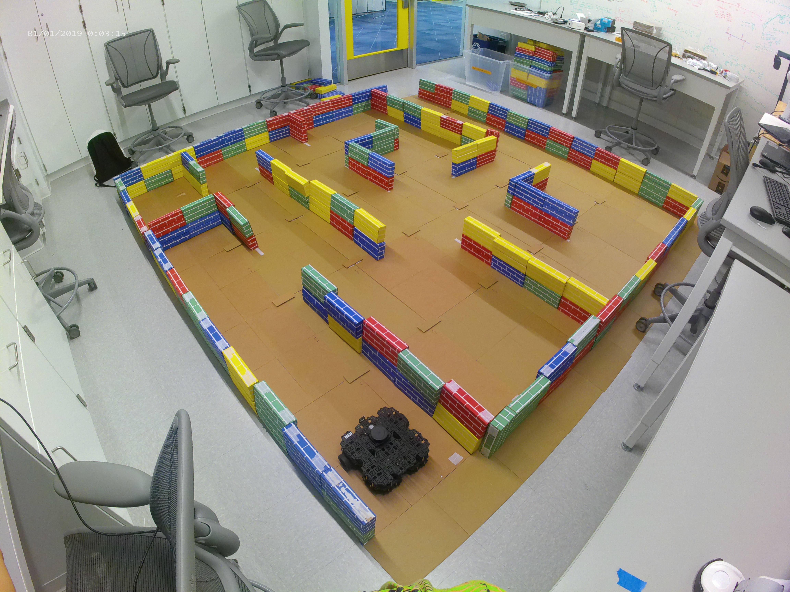

During the summer of 2021, one of my projects at the UChicago Human-Robot Interaction Lab included assisting Dr. Sarah Sebo in preparing her Introduction to Robotics curriculum for in-person instruction.
Accordingly, with the help of my labmate Jason Lin, we spearheaded the design and construction of a physical maze for the Particle Filter Localization project, which involves tracking a Turtlebot3 in a maze using a particle filter localization algorithm.

(The maze ready for some zippy Turtlebotz)
We prototyped the maze (many, many times…) in Blender and Gazebo before choosing the optimal design and make for the physical maze. Since the design had to cooperate well with particle filter localization algorithms, i.e. localize within a reasonable runtime, we did multiple runs over the summer of particle filter localizations on our maze design.
Below is a run I did using my own particle filter localization algorithm, created by my team during when I took Introduction to Robotics myself!